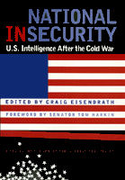

<body bgcolor="#FFFFFF" text="#000000" link="#0000FF" vlink="#CC0000" alink="#CC0000"><center><hr width="350" size="1" align="center" noshade>Practical solutions for the reform of national security operations<hr width="350" size="1" align="center" noshade><p><a href="https://cdcshoppingcart.uchicago.edu/Cart/ChicagoBook.aspx?ISBN=9781566397445&&PRESS=temple" target="_top">Buy this book!</a> | <a href="https://cdcshoppingcart.uchicago.edu/Cart/Cart.aspx?PRESS=temple" target="_top">View Cart</a> | <a href="https://cdcshoppingcart.uchicago.edu/Cart/Cart.aspx?PRESS=temple" target="_top">Check Out</a></p><p></p></center><!--none//--><h1>National Insecurity</h1>
<H2>U.S. Intelligence After the Cold War</H2>
<H2><!-- Foreword by Senator Tom Harkin. -->A Project of the Center for International Policy</H2>
<h3>edited by Craig Eisendrath, foreword by Tom Harkin</h3>
<P>cloth 1-56639-744-8 $55.50, Dec 99, <FONT COLOR=#990033>Available</FONT>
<br>paper 1-56639-848-7 $32.95, Aug 00, <FONT COLOR=#990033>Available</FONT>
<br>Electronic Book 1-59213-779-2 $32.95 <FONT COLOR=#990033>Available</FONT>
<BR> 296 pp
6x9
1&nbsp;table
</P><BLOCKQUOTE><I>"The distinguished contributors to this book present a wide range of perspectives from which to assess our intelligence system. Their decades of public service command tremendous respect. Their views break new ground and demand the attention of the White House and of lawmakers on both sides of the aisle. This book should be required reading by all congressional committees concerned with intelligence policy, surveillance, and appropriations, and by all Americans."</I>
<BR>&#151<B>Senator Tom Harkin</B>, from the Foreword<I></I></BLOCKQUOTE>
<P> The Cold War has been over for ten years and no country threatens this nation's existence, yet, we still spend billions of dollars on covert action and espionage. Even during the Cold War, when intelligence was seen as a matter of life and death, our system served us badly. It provided unreliable information (leading, among other things, to a grossly inflated military budget) as it supported corrupt regimes around the world, promoted the drug trade, and repeatedly violated foreign and domestic laws. And worse, protected by a shroud of secrecy, it paid no price for its mistakes. Instead, it grew larger and more insulated every year.
<p>In <i>National Insecurity</i> ten prominent experts describe, from an insider perspective, what went wrong with U.S. intelligence and what needs to be done to fix it. Drawing on their experience in government administration, research, and the foreign service, they propose a radical rethinking of the United States' intelligence needs in the post-Cold War world. In addition, they offer a coherent and unified plan for reform that can protect U.S. Security while upholding the values of our democratic system.
<P>The contributors include Roger Hilsman, former Assistant Secretary of State, advisor to President Kennedy, and author of <I>The Cuban Missile Crisis</I>; Melvin A. Goodman, former division chief and senior analyst at the CIA's Office of Soviet Affairs; Robert E. White, former U.S. ambassador to El Salvador and Paraguay and president of the Center for International Policy; Robert V. Keeley, former ambassador to Greece, Zimbabwe, and Mauritius; Jack A. Blum, chief investigator for Senator Church's Senate Foreign Relations Committee and for the Senate investigation of the Iran-Contra scandal; Kate Doyle, analyst at the National Security Archive; Alfred W. McCoy, author of <I>The Politics of Heroin</I>; Robert Dreyfuss, a journalist who publishes regularly on intelligence matters; Richard A. Stubbing, who for twenty years handled the intelligence budget for the Office of Management and Budget; Pat M. Holt, former chief of the Senate Foreign Relations committee and author of <I>Secret Intelligence and Public Policy</I>; and the editor.
<BR>&nbsp;<h2>Excerpt</h2><P>Excerpt available at <a href="http://www.temple.edu/tempress">www.temple.edu/tempress</a></p>
<BR>&nbsp;<h2>Reviews</h2>
<p><I>"[A] comprehensive sweep of the disputes and principles that underlie the struggle for an ethics-grounded U.S. intelligence commitment."</I>
<br>&#151<b><I>Baltimore Sun</I></b>
<p><i>"[The book] was published in 2000 but unfortunately, its relevance and importance have increased exponentially since the turn of the century.... This book is a must read."</i> The review is available on the EU Policy Network website: Vol. 2, No. 3, pp. 43-46.
<br>&#151<b><i>The Journal of European Affairs</i></b>
<p><i>"</i>National Insecurity<i> is only the latest in a long line of volumes that make you think about the good and the bad all over again."</i>
<br>&#151<b><i>Washington Monthly</i></b>
<p><i>"Veteran diplomats, former congressional staff members and journalists who specialize in intelligence coverage join forces in this collection of essays to call for a total overhaul of U.S. intelligence strategy."</i>
<br>&#151<b><i>Christian Century</i></b>
<BR>&nbsp;<h2>Contents</h2><P>
<P>Foreword &#150 Senator Tom Harkin
<BR>Introduction &#150 Craig Eisendrath
<BR>1. After the Cold War: The Need for Intelligence &#150 Roger Hilsman
<BR>2. Espionage and Covert Action &#150 Melvin A. Goodman
<BR>3. Too Many Spies, Too Little Intelligence &#150 Robert E. White
<BR>4. CIA-Foreign Service Relations &#150 Robert V. Keeley
<BR>5. Covert Operations: The Blowback Problem &#150 Jack A. Blum
<BR>6. The End of Secrecy: U.S. National Security and the New Openness Movement &#150 Kate Doyle
<BR>7. Mission Myopia: Narcotics as Fallout From the CIA's covert Wars &#150 Alfred W. McCoy
<BR>8. TECHINT: The NSA, the NRO, and NIMA &#150 Robert Dreyfuss
<BR>9. Improving the Output of Intelligence: Priorities, Managerial Changes, and Funding &#150 Richard A. Stubbing
<BR>10. Who's Watching the Store? Executive-Branch and Congressional Surveillance &#150 Pat M. Holt
<BR>Conclusions &#150 Crag Eisendrath
<BR>Selected Bibliography
<BR>About the Center for International Policy
<BR>About the Contributors
<BR>Index
</P><BR>&nbsp;<H2>About the Author(s)</H2>
<P><B>Craig Eisendrath</b> is Senior Fellow at the Center for International Policy in Washington, D.C. He served as a U.S. Foreign Service Officer.</P>
<P>Contributors: Roger Hilsman, former Assistant Secretary of State, advisor to President Kennedy, and author of <I>The Cuban Missle Crisis</I>; Melvin A. Goodman, former division chief and senior analyst at the CIA's Office of Soviet Affairs; Robert E. White, former U.S. ambassador to El Salavador and Paraguay and president of the Center for International Policy; Robert V. Keeley, former ambassador to Greece, Zimbabwe, and Mauritius; Jack A. Blum, chief investigator for Senator Church's Senate Foreign Relations Committee and for the Senate investigation of the Iran-Contra scandal; Kate Doyle, analyst at the National Security Archive; Alfred W. McCoy, author of <I>The Politics of Heroin</I>; Robert Dreyfuss, a journalist who publishes regulary on intelligence matters; Richard A. Stubbing, who for twenty years handled the intelligence buget for the Office of Management and Budget; Pat M. Holt, former chief of the Senate Foreign Relations Committee and author of <I>Secrt Intelligence and Public Policy</I>; and the editor.</P>
<BR><H2>Subject Categories</H2>
<p><A HREF="/tempress/political.html" TARGET="_top">Political Science and Public Policy</a>
<BR><A HREF="/tempress/general.html" TARGET="_top">General Interest</a>
</p>
<p align="center"><a href="https://cdcshoppingcart.uchicago.edu/Cart/ChicagoBook.aspx?ISBN=9781566397445&&PRESS=temple" target="_top">Buy this book!</a> | <a href="https://cdcshoppingcart.uchicago.edu/Cart/Cart.aspx?PRESS=temple" target="_top">View Cart</a> | <a href="https://cdcshoppingcart.uchicago.edu/Cart/Cart.aspx?PRESS=temple" target="_top">Check Out</a></p><p><font face="Arial" size="1"><a href="copyright.html" onMouseOver="window.status='Web Copyright Policy';return true;" onMouseOut="window.status=''" title="Web Copyright Policy">&copy;</a> 2015 <a href="http://www.temple.edu" target="new" onMouseOver="window.status='Link to Temple University home page';return true;" onMouseOut="window.status=''" title="Link to Temple University home page">Temple University</a>. All Rights Reserved. http://www.temple.edu/tempress/titles/1447_reg.html</font></p>